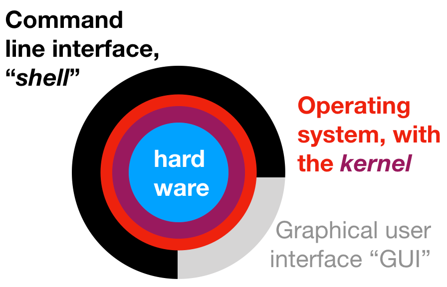
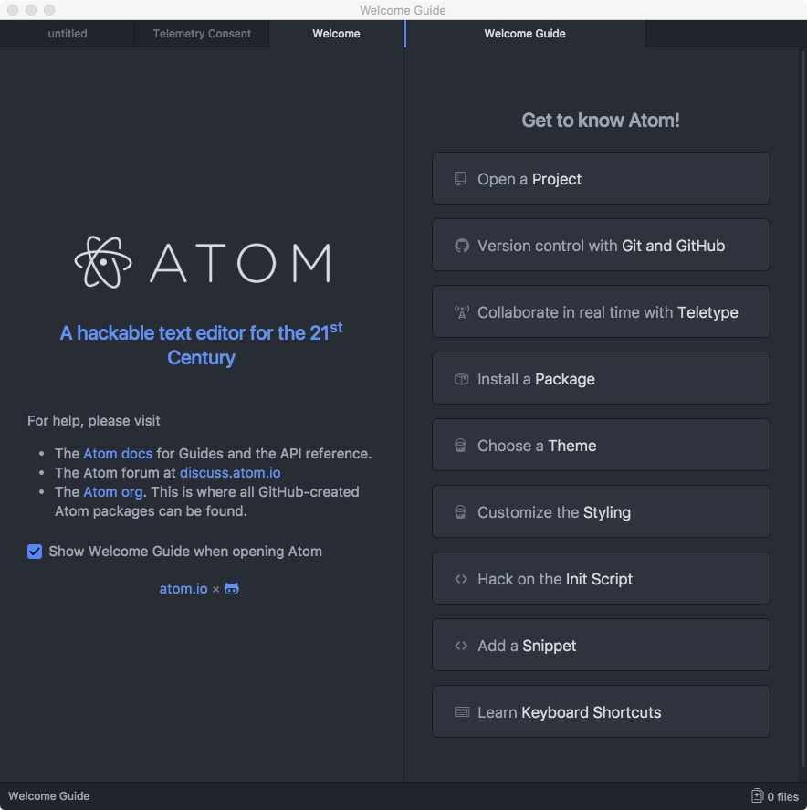
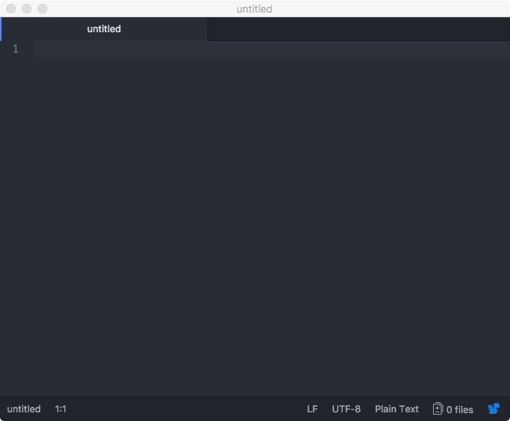
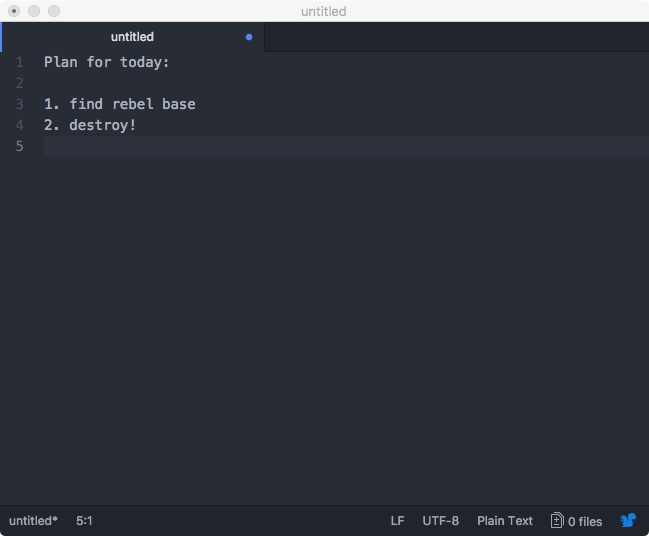
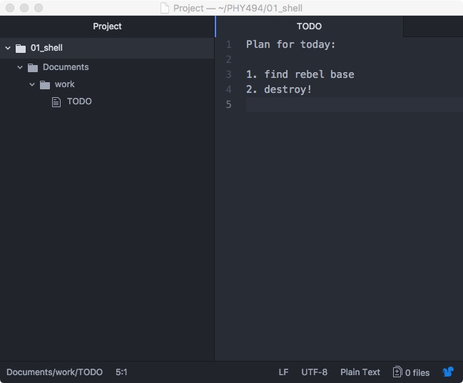

01 The Unix Shell
10 Jan 2019This lesson introduces the shell, also known as the command line. There are many different shells: We are using the bash shell.
This lesson builds on An Introduction to the command line with Unix Basics and the Software Carpentry lesson on The Unix Shell.
- Background and Motivation
- Introductory Shell Tutorial on basic shell usage
- Intermediate level (optional)
Background and Motivation
As a computational scientist you have one primary tool at your hand: a computer. And like an experimental scientist, you will have to be able to interact with it, adjust it, tweak it, fix it, and generally make it do things that it has never done before.

You are probably used to interacting with a computer via a graphical user interface ("GUI") — windows, browsers, a mouse or touch screen. Although convenient, this limits you to the interactions designed into the interface. To get more out of a machine you have to talk to it more directly.
We will interact with the computer using the text-based terminal through a so-called command line interface (CLI). The user types input commands; the commands are read, executed, and output is printed. The program responsible for doing this is called the shell (because it "encloses" the operating system to simplify user interaction with it).
The shell is a program like any other but it's primary purpose is to run other programs; most of the input "commands" are in fact other programs. The shell is very good at working with the file system (files and directories), combining multiple existing tools in powerful ways, and automating tasks. On a Unix-like operating systems (typically used for high-performance computing) using the shell is a very powerful (and essential) way to interact with the computer.
Introductory Shell Tutorial
Accessing the shell
-
On a typical Linux system you open an application called terminal or xterm or kterm (or similar).
-
On Mac OS X you open Terminal.app (in the Utilities folder in Applications).
-
On Windows we use Git Bash: Find it in the Program menu under All Programs/Git/Git Bash
You should be greeted by the prompt, which can look like this
$
with the cursor as an underline or block showing that you can type. Often your prompt is more elaborate, e.g.
dvader@deathstar.empire.gov ~$
Type
whoamiand hit enter. You should see your username being printed to the screen.
Type
cdand hit enter to begin the lesson. From now on, input will just be shown and you should enter it.
Navigating Files and Directories
Commands
pwd(print working directory)ls(list directory)cd(change directory)
Commands generally take arguments (what to operate on, required) and options (modify the standard behavior, optional).
command_name -v -o optarg --long-opt arg1 arg2Often, omitting the argument also works and a default is assumed. You
can learn more about commands with the help function (try running just
with option -h or --help or on Linux/Mac OS X, man command_name;
the Git Bash installation does not come with man pages but you can
use services on the web such as the
Debian man pages).
Paths
A path consists of directory names separated by forward-slashes
"/" and possibly a final file name.
/(the actual name of the "root" directory)/home/dvaderor/Users/dvader/usr/bin/nanobooks.txt/home/dvader/Documents/deathstar/weaknesses.pdfDocuments/deathstar/weaknesses.pdf
Paths starting with / are called absolute paths; anything else is
a relative path, starting from the current working directory (check
with pwd).
Special directory names:
.is the current directory (e.g.,./Documents)..is the parent directory (e.g.,../../home/dvader/..)~is the home directory (only when leading the path, e.g.,~/Documents)
Location in the files system: pwd
Assume user dvader has the following directory layout in his home
directory /home/dvader:
/home/dvader/
Documents/
deathstar/
weaknesses.pdf
electrical_bill.dat
work/
data/
planets.dat
bases
When Mr Vader logs in he starts in his home directory, /home/dvader. He can
run pwd to "print the working directory":
pwdwhich shows /home/dvader.
Activity: Find Your Home
- Open Terminal
- Type
pwd
and hit enter. Note the directory name: this is your home directory.
Listing file system contents: ls
If he executes ls ("list") he will see something like
Documents
data
Activity: List Your Home directory
- open a terminal (or use the open terminal from the last exercise)
- Type
ls
- Compare the files that you see with those of your neighbor.
Moving around the file system: cd
If he executes the cd command
cd /home/dvader/Documents/deathstarthen he will have moved to the deathstar directory; confirm with pwd!:
pwdwill print
/home/dvader/Documents/deathstar
If he runs
lshe will see
electrical_bill.dat weaknesses.pdf
The cd command took an argument, the directory to go to.
Activity: Going up
- Go to the parent directory of your home dir:
cd ..
- List the contents
ls
Activity: Going Home
- Type
cd
- Where are you now? (What command can you use to print the directory that you're in?)
More on cd
The command cd on its own always returns you to your home
directory. (It is equivalent to cd ~.)
In order to get to the data directory he could use the command cd
/home/dvader/data but instead he uses the special directory ..
(which means "the directory above this one"):
cd ../../dataA second special directory is . ("this directory"). . and ..
are understood by all commands.
Autocompletion
- Use the
TABkey while typing: autocompletion is one of the best features of the shell! - The other great interactive feature is the history: try using the cursor-up and -down keys.
Error messages
Unix commands are terse: If everything works, they say nothing. If they fail, you get a short (sometimes cryptic) error message.
Try
cd bogusThis gives
bash: cd: bogus: No such file or directory
Always read error messages!
Activity
-
What does the following sequence of commands show?
cd ls -a - Go to the
bindirectory that is located in the root directory (at least on Linux and macOS). List the files there. Did you find "nano" and "grep"? If not, look into/usr/bin - What does
ls -R /show? (Try^C, i.e., press CONTROL and C at the same time…) - Try other options of
lssuch as-shor-sha. — asklsfor help! - Is there a difference between
ls -sha,ls -ash, andls -a -s -h?
Tips to make your life easy
- Use the shell's convenience features:
TABcompletion- up/down arrow to get commands that you already typed.
historyshows all the commands you typed so far- Try out
Control+R(^R) to search through your shell history. ^Aand^Ewill likely take you to the beginning and end of a line
- Use
cd ..to go up,cd ../..to go up twice etc. - Use
cd -to go to the previous directory I was in (only works forcd). - Use the tilde character
~for your home directory, e.g.cd ~/Documentsis equivalent tocd /home/dvader/Documents.
Creating directories and files
Commands
mkdir(make directory)- your editor of choice (atom by default for the class,
nanois an alternative choice 1)
Directory structure for the class
Make a directory PHY494 in your home directory for the class and
inside it, one called 01_shell for today's lesson:
cd ~
mkdir PHY494
cd PHY494
mkdir 01_shellNote:
- Avoid spaces and most special characters in file names. All
letters and numbers together with underscore
_, minus sign-, and period.are ok. 2 - Plain
mkdircannot create multiple directories deep in one go unless you have the-poption (check!).
Activity
- Inside your
01_shelldirectory, create three directories,dataandDocuments/work. - Go to
Documents/work
Creating text files with a text editor
Run atom:
atomYou should see something like this:

We will now create a TODO list in a file with name TODO and content
Plan for today:
1. find rebel base
2. destroy!
-
Open a new file via the menu option
File → New File
You should have a tab named untitled.
Close all the other tabs. It should look like this:

-
Type the todo list into the editor window.

-
Save it to file with name 'TODO' with menu option
File → Save
Make sure to navigate to your the
PHY494/01_shell/Documents/workdirectory.
You can hide the "project" view with the directory structure.
-
Quit atom (details depend on your operating system; find the Quit menu option either under File or Atom.
-
Check that the file is in the directory with
ls.
You can re-open the file from the command line:
atom TODOActivity: create a file with your editor
-
Create a file
~/PHY494/Documents/work/lesson.txtwith three lessons from today:1. computers are tools 2. the shell is powerfull 3. basic shell commands: pwd, cd, ls -
save the file and check that it is there with
ls -l ~/PHY494/Documents/work/lesson.txt
- Open the file again and add a 4th lesson regarding file editing.
Copy, rename, delete
cp(copy file,cp -rcopy recursively, including directories)mv(move, i.e. rename, also to another directory)rmdir(remove empty directory)-
rm(remove file,rm -rremove recursively (dangerous!))WARNING: There is no "Trashcan" or built in backup. Once you
rmsomething, it is gone. Be especially careful withrm -r.WARNING: Do not execute
rm -rf *. It will erase everything permanently.
Note: all these commands can also work on multiple filenames.
Activity (optional)
This is a more extended exercise in using various shell commands. For today, this is optional, but you are encouraged to do it.
- Make a backup (call it
TODO.bak) of the TODO list with thecpcommand. - Rename
TODOtoTODO.txtwith themvcommand. -
Make a directory
notesunder thedatadirectory: You should now have a directory tree similar to~/PHY494/01_shell/ Documents/ work/ TODO.txt TODO.bak data/ notes/Check with
ls -R ~/PHY494. - Put a copy of
TODO.txtinto thenotesdirectory (usingcp). - Create a new text file
data/notes/hints.txtand write any hints for possible rebel bases into this file. - Open
TODO.txtinatomand add a note to item 1 too look in the hints.txt file. Save and exit. -
Make a copy of your
notesdirectory in your work directory:~/PHY494/01_shell/ Documents/ work/ TODO.txt TODO.bak notes/ TODO.txt hints.txt data/ notes/ TODO.txt hints.txt - Remove
data/notes/hints.txtwithrm. - Remove
data/noteswithrmdir. (Hint: Read the error message!) - Move
work/notes/hints.txtinto theworkdirectory. - Remove the useless
work/notesdirectory withrm -r(careful !)
Intermediate Level
The following is very useful but for right now not essential and is optional. You can work through the tutorial in your own time.
Pipes and Filters
Commands
catheadtaillesswcsortuniqcutandpastegrep
and special shell characters
|("pipe", joins commands together)>(redirects output to a file)<(redirects file to input)
Working with redirection and command pipelines
Download planets.dat3
and put it in the directory data/. You can do this with your web
browser or if you have the curl program installed, try
curl https://asu-compmethodsphysics-phy494.github.io/ASU-PHY494/public/data/planets.dat -O(all on one line).
Output the whole file to the screen:
cat planets.datLook at the first three lines of the file
head -3 planets.datshould give
Alderaan 12500 grasslands/mountains
Yavin_IV 10200 jungle/rainforests
Hoth 7200 tundra/icecaves/mountainranges
Count the number of planets
wc planets.dat 60 180 2944 planets.dat
Make a file in which all planets are duplicated:
cat planets.dat planets.dat > planets_2.dat(cat concatenates files and then you redirect it to a new file.)
Activity
- Test that
wc -lgives just the number of lines ("60"). - What does
wc planets.dat planets_2.datdo? - What happens when you do
wc < planets.dat? - Run
wcthen type any number of lines of text (pressing enter to terminate each line) and when you get bored, press^D(control+D). What happened?
Pipes
Sort by name and look at the first five using a pipes and filters:
sort planets.dat | head -5Sort by diameter (-k2,2 is column 2 and numeric sort -n), biggest
first (-r reverse sort), and write the top 3 to a file
biggest_planets:
sort -k2,2 -n -r planets.dat | head -3 > biggest_planetsCount the number of planets with unknown diameter:
grep "unknown" planets.dat | wc -lGet the first letter of each planet name and sort alphabetically:
cut -b 1,1 planets.dat | sortGet the terrain types
cut -b 29- planets.datActivity
- Count the number of planets in
planets_2.dat. - Find planets where the rebel might have a base (hint: you know it's
cold there… use
grep). How many planets will you investigate more closely? Write the list to the filebases. - How many unique terrain types are there? (Hint:
uniqneeds a sorted list as input) - What is the most frequent and the least frequent first letter
amongst these planets? (Hint:
uniq -c)
Shell glob patterns
Use the character * to match "any part of a file name", e.g.
ls *.datwill list all files ending in .dat.
The ? character matches a single character. Neither of them matches
a leading . in a file name or a space.
Using git to get data for the class
git is a version control software and we will come back to explain
its main functionality later. Right now we use it as a convenient tool
to get additional data.
There is a "repository" at https://github.com/ASU-CompMethodsPhysics-PHY494/PHY494-resources that contains data and code to be used during the class. It will be updated as we go along.
Get the data for today by cloning the repository:
cd ~
git clone https://github.com/ASU-CompMethodsPhysics-PHY494/PHY494-resources.git
(You only need to do this once.)
At any later time, pull in the latest updates from inside the repository::
cd PHY494-resources
git pull
(This can be done as often as you like.)
Go into the PHY494-resources/01_shell/data directory.
Activity
-
Read the
READMEfile (e.g. usingatomorcatorless(for the latter, usehto get help andqto quit)). -
Count the number of entries in all files ending in "csv". (Hint: use a glob pattern)
-
Use
cut -f 1 -d ',' people.csvto extract each name to a filenamesand a similar command to extract weight to a fileweights. -
Use the
pastecommand to generate a new list that contains "weight name" (reordered and separated by space):paste weights namesUse this approach to sort the people in order of decreasing weight.
Shell scripts
You can save commands in a file. This is called a script. A script allows you to reuse commands (laziness is a programmer's virtue!) without having to retype them over and over again. It also allows you to solve a task once and then forget about how you did it in detail because it is written in the script.
Make directory ~/bin for your scripts in your home directory.
mkdir ~/bin(I strongly suggest you do this really in your home directory because
in the following I will assume it; if you changed the path to
e.g. ~/classes/2016/PHY494/bin then you will need to use that path
in all the following examples.)
Usingatom, create the following script ~/bin/update_resources.sh:
# PHY 494 script to update the resources repository
GIT_REPOSITORY="${HOME}/PHY494-resources"
cd "${GIT_REPOSITORY}"
git pull
echo "Updated resources in ${GIT_REPOSITORY}"(You create the script by (1) atom ~/bin/update_resources.sh (opens
empty file if it does not exist), (2) type all the lines into the
editor (or copy & paste), (3) save the file and exit the editor.)
Notes:
-
All the lines above should be in your file (first line will start with
# PHY 494and the last line will begin withecho). -
The line starting with
#is a comment: it is not a shell command and is ignored by the shell. However, adding comments to scripts is a really, really good idea! -
The shell has variables: Some like
HOMEare pre-defined, others you can define yourself (GIT_REPOSITORY=...). Using all-caps is a convention that you should follow.The contents (value) of variables is accessed with the dollar
$sign in front of the variable name. -
echoprints to the standard output (typically, the screen)
Execute the script with
bash ~/bin/update_resources.shIt should show output similar to
Already up-to-date.
Updated resources in /Users/oliver/PHY494-resources
However, during the course of the year more data will be added to the repository and then you can just run your update command to get the data and you might see output like the following:
remote: Counting objects: 15, done.
remote: Compressing objects: 100% (10/10), done.
remote: Total 15 (delta 2), reused 15 (delta 2), pack-reused 0
Unpacking objects: 100% (15/15), done.
From https://github.com/ASU-CompMethodsPhysics-PHY494/PHY494-resources
c3b5c04..23a4083 master -> origin/master
Updating c3b5c04..23a4083
Fast-forward
01_shell/bin/update_resources.sh | 8 ++++++++
02_python/gutentag.py | 4 ++++
2 files changed, 12 insertions(+)
create mode 100644 01_shell/bin/update_resources.sh
create mode 100644 02_python/gutentag.py
Updated resources in /Users/oliver/PHY494-resources
Footnotes
-
Upgrading nano: If you are using
nanoas your editor then you want to enable a few useful features including syntax highlighting. The easiest way is to download the config files as the zip file nanoconfig.zip and unpack them in your home directory (curlcan be used to download a file directly instead of having to use the browser):cd curl https://asu-compmethodsphysics-phy494.github.io/ASU-PHY494/public/resources/nanoconfig.zip -O unzip nanoconfig.zipThis should create the files
~/.nanorc(which you can edit to customize further) and the directory~/.nano. ↩ -
If you must need spaces then enclose the string in single or double quotes, e.g.,
'/c/Program Files/'or"/c/Program Files". Double quotes admit shell variable expansions, single quotes do not. Note that a tilde~within quotes will not expand to the home directory! ↩ -
Star Wars data courtesy of SWAPI. See PHY494-auxilliary/star_wars for Python code to pull the data from SWAPI. ↩